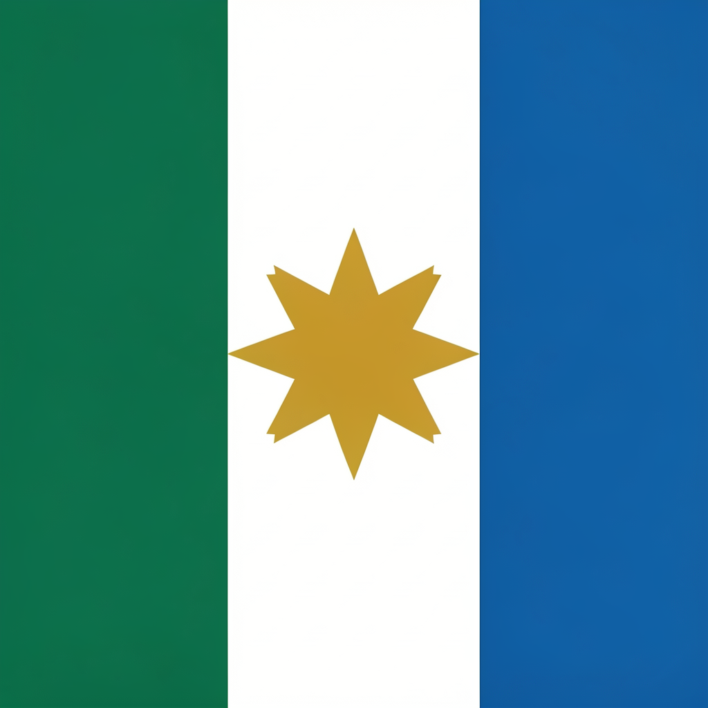
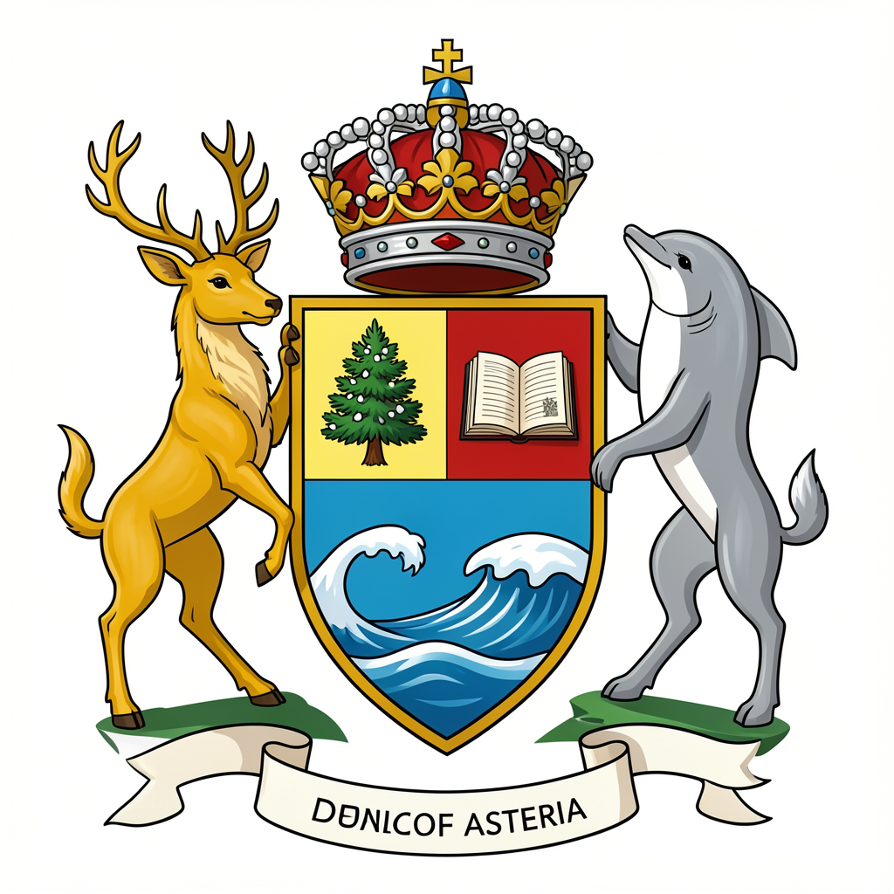

Identidad Nacional
Lema
«Luz, Mar y Montaña»
Tres elementos que definen el alma del país: la educación como luz, el océano como libertad y la sierra como fuerza. El lema aparece en todos los edificios públicos y en el escudo nacional.
Himno Nacional
Cada estrofa recuerda a los ciudadanos su deber con la tierra y con la libertad. Cántase en todos los actos oficiales, desde el primer día de clase hasta la apertura del Parlamento.
Título: Himno de Asteria
Estrofa 1
Desde el pico nevado hasta el mar que nos canta,
Asteria despierta con fuerza y esperanza.
Verde el trigo, azul la onda, roja la libertad:
¡nuestro pueblo es el dueño de su propia verdad!
Coro
¡Asteria, Asteria, patria del porvenir!
Con la mano en la tierra y el alma en latir,
nadie romperá la unión de este suelo sin fin,
porque Asteria es el sueño que sigue en mí.
Estrofa 2
No hay frontera que pueda callar nuestra voz,
ni muro que detenga el vuelo de nuestra canción.
Del trabajo nacen los lazos, del saber los caminos,
Asteria florece bajo soles divinos.
Coro
¡Asteria, Asteria, patria del porvenir!
Con la mano en la tierra y el alma en latir,
nadie romperá la unión de este suelo sin fin,
porque Asteria es el sueño que sigue en mí.
Bandera Nacional
Tres franjas verticales: verde esmeralda (bosques y agricultura), blanco puro (paz y neutralidad) y azul océano (mar y libertad). En el centro, una estrella dorada de ocho puntas — una por cada región histórica. Proporción 2:3.

Escudo Nacional
Forma de escudo español con yelmo de granadero. Campo dividido en tres: un pino nevado (resistencia), una ola (comercio y apertura) y un libro abierto (educación). Soportes: ciervo dorado y delfín plateado. Cinta inferior con el lema «Luz, Mar y Montaña».

Idioma oficial — Astéllicо
El astéllico es la lengua oficial, hablada por el 94% de la población. Surge de la mezcla de raíces latinas, germánicas y eslavas. Se escribe con 27 letras del alfabeto latino, incluyendo la letra Ʒ para el sonido /ʒ/ como en «medida».
Palabras fundamentales:
- Aster = patria, hogar
- Lumin = luz, conocimiento
- Vent = viento, cambio
- Koral = unión, comunidad
- «¡Aster vasta!» = «¡Viva Asteria!»